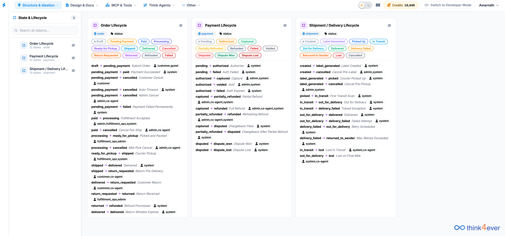

State & Lifecycle Management
Welcome to the State & Lifecycle management module. This tool allows product managers, developers, and operations teams to map out, visualize, and manage state transitions across various core business workflows.

Interface Overview
The workspace is split into two primary areas:
- Left Navigation Panel (Sidebar): Displays a searchable catalog of all managed lifecycles. It provides a quick glance at the number of defined states per lifecycle (e.g., Order Lifecycle, Payment Lifecycle, Shipment / Delivery Lifecycle).
- Main Canvas Board: A column-based kanban/flow view where each selected lifecycle is expanded into a detailed card showing available states (color-coded badges) and sequential text-based transition logs below them.
Core Components of a Lifecycle Card
Every lifecycle column on the board consists of three distinct elements:
- Header & Target Badges: Indicates the entity type (e.g., order, payment, shipment) and the field being tracked (e.g., status).
- State Pool: Visual pills showing all possible milestones or states an entity can inhabit during its life. Different colors represent distinct phases (e.g., green for successful/completed steps, red for failures or cancellations, orange for pending actions).
- Transition Mapping Rules: A structural list mapping exactly how a state shifts from Origin → Destination, accompanied by the action alias and the designated Actors allowed to trigger it.
Understanding the Main Lifecycles of an Existing Project
Let’s take this sample project, the platform handles three core transactional workflows:
📑 Order Lifecycle
Manages the progression of a customer order from placement to completion or reversal.
- Key States: Draft, Pending Payment, Paid, Processing, Ready for Pickup, Shipped, Delivered, Cancelled, Return Requested, Returned, Refunded, Failed.
- Example Rule: pending_payment → paid via Payment Succeeded, triggered by the system.
💳 Payment Lifecycle
Tracks the financial transaction state attached to a checkout flow.
- Key States: Pending, Authorized, Captured, Partially Refunded, Refunded, Failed, Voided, Disputed, Dispute Won, Dispute Lost.
- Example Rule: authorized → captured via Capture, triggered by admin, system.
📦 Shipment / Delivery Lifecycle
Traces physical fulfillment milestones for packages post-purchase.
- Key States: Created, Label Generated, Picked Up, In Transit, Out for Delivery, Delivered, Delivery Failed, Returned to Sender, Lost, Cancelled.
- Example Rule: out_for_delivery → delivered via Delivered, triggered by system.
How to Read and Define Transition Rules
The text blocks beneath the state pills use a rigid formatting syntax to define system architecture logic:
Component Breakdown
- Origin state (left): The required state the entity must currently hold.
- Arrow (→): Indicates the unidirectional movement path.
- Target state (right): The destination state resulting from a successful action.
- Italicized Text: The human-readable event or API trigger causing the shift (e.g., Courier Pickup, Auto-Timeout).
- User Icon (Ω): Displays the permission role required to fire the event (e.g., customer, admin, system, cs-agent, fulfillment_ops).
Tips for Managing Lifecycles
- Searching Objects: Use the input field at the top left of the sidebar (Search all objects...) to isolate specific lifecycles when your system scales.
- Audit Permissions carefully: When reviewing routes, ensure sensitive transitions (such as captured → refunded) restrictedly list the correct privileged roles like admin or cs-agent to prevent system vulnerabilities.
- Identifying Dead Ends: Look for states in the visual pool that lack corresponding transition rules beneath them; these represent end-states (terminal nodes) like Delivered, Refunded, or Cancelled.
Depending on your application, the lifecycle configurations might shift entirely:
- Fintech & Banking Platforms: If you are building transactional wallets or core ledger applications, your states would revolve around validation pipelines, ledger holding, and virtual processing blocks (e.g., KYC_Pending → Wallet_Active or Entry_Posted → Reconciled).
- Content & Media Portals: If the application manages digital assets or tutorials, the lifecycle shifts to track creative assets through states like Draft → Review → Published → Archived.
- Ticket & Bug Tracking Systems: For internal operations, states would reflect QA and issue tracking, mapping progress directly across roles from development to verification (e.g., Open → In_Testing → Not_Fixed or Resolved).
Ultimately, these cards serve as a visual blueprint of your system's back-end state machine. By mapping them out here, the engine ensures that no entity can bypass your defined paths, keeping your system data secure, predictable, and aligned with your real-world business rules.